태어난 주민도 노년으로
출생 → 어린이 → 청소년 → 성인 → 노년. 성인 이후 4계절, 출생 후 244일부터 노년입니다.
실제 이름·피부·머리 모양·옷을 유지합니다. 아래는 생성 외형 12가지 예시입니다.
생성 주민 예시 1
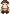
성인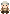
앞 · 노년뒤 · 노년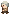
왼쪽 · 노년오른쪽 · 노년생성 주민 예시 2
성인앞 · 노년뒤 · 노년왼쪽 · 노년오른쪽 · 노년생성 주민 예시 3
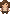
성인앞 · 노년뒤 · 노년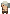
왼쪽 · 노년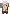
오른쪽 · 노년생성 주민 예시 4
성인앞 · 노년뒤 · 노년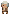
왼쪽 · 노년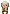
오른쪽 · 노년생성 주민 예시 5
성인앞 · 노년뒤 · 노년왼쪽 · 노년오른쪽 · 노년생성 주민 예시 6
성인앞 · 노년뒤 · 노년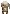
왼쪽 · 노년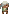
오른쪽 · 노년생성 주민 예시 7
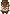
성인앞 · 노년뒤 · 노년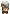
왼쪽 · 노년오른쪽 · 노년생성 주민 예시 8
성인앞 · 노년뒤 · 노년왼쪽 · 노년오른쪽 · 노년생성 주민 예시 9
성인앞 · 노년뒤 · 노년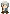
왼쪽 · 노년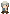
오른쪽 · 노년생성 주민 예시 10
성인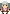
앞 · 노년뒤 · 노년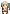
왼쪽 · 노년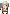
오른쪽 · 노년생성 주민 예시 11
성인앞 · 노년뒤 · 노년왼쪽 · 노년오른쪽 · 노년생성 주민 예시 12
성인앞 · 노년뒤 · 노년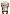
왼쪽 · 노년오른쪽 · 노년